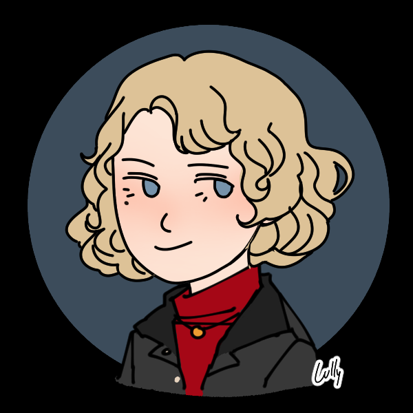

Software Engineer | Computer Science Graduate from Fordham University | Passionate About Diversity in STEM
I recently graduated summa cum laude from Fordham University with a B.S. in Computer Science and a minor in Anthropology. This summer, I completed a Software Engineering internship at Arity, where I engineered high-volume data pipelines and backend services in cloud-native environments, contributing to scalable, real-time applications that support smarter and safer transportation technology.
Throughout my academic and professional experience, I have developed strong proficiency in Java, C++, Python, and Swift, along with hands-on experience in full-stack development, data modeling, and software testing. Previously, at the U.S. Environmental Protection Agency, I redesigned a national SQL data model for a climate change database and led the development of a website prototype that helped secure $30,000 in federal funding.
In addition to my professional experience, I have built independent projects such as Augur, a Java-based command-line application that integrates REST APIs and comprehensive unit testing to ensure reliability and scalability. I have also developed The Home Archive, a home library management application that demonstrates AI-assisted development and integrates external APIs, search capabilities, and secure data handling. These projects reflect my curiosity and commitment to writing clean, maintainable code and experimenting with modern development practices.
My background in anthropology has strengthened my communication, research, and analytical skills, as well as my commitment to building inclusive, user-centered technology. I am passionate about developing products that are not only innovative, but also thoughtfully designed to consider diverse perspectives and needs.
I am currently seeking opportunities to grow as a software engineer in collaborative environments where I can continue learning while building meaningful, real-world applications. I'm always open to connecting with others in tech - please feel free to reach out to me at fionadark.@protonmail.com.
A Java-based Tarot card reading application that integrates REST APIs and includes comprehensive unit testing to ensure reliability and scalability.
A home library management application built as an experiment in AI-driven software development, using GitHub Spec Kit and Claude Sonnet 4.